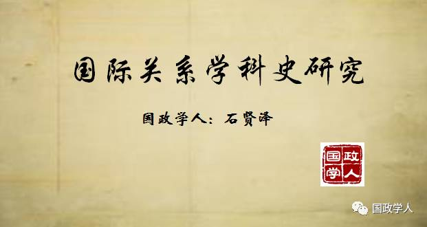

收录于合集


国际关系学科史研究的意义:对学科身份与知识实践的反思 学人简介：石贤泽（国际关系学院副教授，硕士生导师。2009年毕业于中国人民大学国际关系学院获法学博士学位，）
无论是传统的国际关系学科史还是批判性的国际关系学科史，作为一种历史叙述，它都指向多个层面的实践活动: 第一个层面的实践活动乃是学科身份建构或反思；第二个层面的实践活动乃是国际关系学科之外的国际政治意识形态建构。
国际关系学科史所建构或反思的学科身份主要围绕着三个问题： 国际关系学的 学科独立性问题 即国际关系学是否是一门独立学科；国际关系 学科的统一性和分裂性问题 ，即国际关系学的国际性与国别性关系问题、国际关系学的知识体系的多元与统一关系问题；国际关系学的 知识连续性问题 ，主要集中于国际关系学的“大争论”叙述中。
国际关系学的学科独立性问题早在“二战”后国际关系月迅速发展之时就已经产生，学者们围绕“国际关系是否是一门学科”、“国际关系学的研究范围”等问题展开思考。 邓恩（Frederick S. Dunn）认为，“作为一个独立的知识分支，国际关系学的区别性特征在于它所处理的问题的性质”，“它包含了研究主题和处理新问题的一套技巧与分析方法”。在卡普兰（Morton A. Kaplan）看来，国际政治不能作为政治学的次学科来进行研究，也不能作为其他学科的次学科来进行研究，因为国际事件不是国内事件的副现象，忽略政治的国际事件分析不能提供令人满意的系统知识，国际政治的主题抗拒系统的国内政治分析；同时，在政治问题的制度解决方式和分配与国际体系的政治价值方面，国际关系学有其独特性。
关于国际关系学科的知识完整性的一个突出研究领域是关于国际关系学的国际性与国别性的讨论，主要围绕“国际关系学是（仍然是）一门美国社会科学吗？”这一问题展开。 霍夫曼在《国际关系学：一门美国社会科学》中对国际关系学的美国特性问题做出了重大的开创性研究。克劳福德（Robert M.A. Crawford）等主编的论文集《国际关系学——仍然是一门美国社会科学吗？》更为集中和系统地讨论了国际关系理论中的霸权与多样性问题、国际关系理论的国家认同与跨国认同问题。
关于国际关系学的知识体系的完整性争论还集中于知识统一或多元与学科进步的关系问题：到底是知识统一还是知识多元更加有利于学科的“进步”。 这一问题又具体细化为两个问题：第一，国际关系领域到底是在走向统一还是多元？第二，到底是统一还是多元更加有利于国际关系学科的发展？霍尔斯蒂（K. J. Holsti）早在20世纪80年代就认为国际关系的特征是“分裂的学科”，冷战后霍尔斯蒂仍然认为“当代国际关系理论事业的本质特征就是分裂化和多元化”。斯密特也认为，多元主义成为学科发展的障碍与问题。对此，史密斯捍卫多元主义，认为“更多即更好”，“相较于难以捉摸的寻求累积性知识研究的选择而言，国际关系学科的多元化更加可取”。伊肯伯里（G. John Ikenberry）和多伊尔（Michael W. Doyle）对此持中庸态度，认为理论多元性的影响是多方面的：悲观的看法认为“理论观点的多元化表明了许可发展缺乏任何重大进步……常规科学仍然不见踪影”，乐观的看法则认为“国际关系学没有完善某一个范式或研究纲领，而是扩展和丰富理论清单”。
对国际关系学知识连续性的知识反思和批判主要集中于“第一次大争论”的虚假历史建构上。 聚焦于“第一次大争论”的批判性研究通过考察两次世界大战期间的国际关系学的发展状况，发现与传统的流行信念相反，国际关系学科史的“第一次大争论”是虚构的，从来就没有真实发生过，它只不过是一个学科的“基础性神话”，是一个不合时代的，回溯性的创造物，主要基于对卡尔的粗糙阅读以及卡尔在打败两次世界大战期间的“理想主义”上的传说性作用，两次世界大战期间的国际关系学也从未被一群信奉所谓的理想主义范式的乌托邦式的学者所支配。
国际关系学科史的国际政治意识形态建构主要体现在学科史叙述所不断强化的“现实主义”范式霸权和“美国中心”的国际关系学。 国际关系学科史通过叙述自身的起源和发展来强化学科中的中心范式与边缘范式之间的相对位置的合法性，而且为当代的学科从业者提供了知识事业的意义感和归属感，进而为当代国际政治实践提供了主导性的思想指南。主流国际关系学科史展现了现实主义范式主导下的多元范式并存的学科特征，尽管国际关系学中的理论范式都是相对温和的，但是，特定的理论范式均带有指向性的意识形态，“现实主义是最为保守和右倾的，自由主义是更加自由和左倾的”。主流国际关系学科史所确立的学科发展的正统叙述同样主导者国际关系教学，现实主义或者更多范围的理性主义成为国际关系教学实践和国际政治人才培养的主体内容，成为国际政治“思想市场”中的主导思想，进而成为影响国际关系政策和国际政治实践的支配性指导思想或者思维框架。 新国际关系学科史通过批判性的立场来超越现实主义的国际政治世界，展现一个权力、规范、理念共同作用的世界，展现一个国际体系主导下的国家间世界中仍然存在国际社会乃至世界社会的可能空间。
国际关系学科史很大程度上是“美国的”国际关系学科史，美国的国际关系学成为整个学科的知识中心。 美国中心的国际关系学具有某些 知识狭隘性 ，美国学者在很大程度上并没有认识到许多理论、框架和争论实质上是为美国的对外政策的关注所驱动的，不管是冷战时期的霸权稳定论和国际机制理论，还是对于后冷战时代的世界秩序的概念化工作（如历史终结论、文明冲突论、进攻性现实主义等），亦或是对于全球恐怖主义的讨论，都是源于美国的政策关注而变成全球性的知识议题。美国与外部世界尤其是非西方国家的学术共同体之间没有形成知识互惠关系， 新国际关系学科史正在打破国际关系学的“美国知识霸权”，倾听关于国际关系的“全球的声音”，关注美国之外的国际关系思想贡献，并且努力推进不同国家或地区的国际关系思想之间的只是对话，实现国际关系学科史的知识地理多元主义。
来源 | 《国际政治学学科地图》
作者 | 石贤泽
编辑 | Alfie
本文由国政学人微信公众平台首发编辑，作者原创。文章用于学习交流，转载请注明来源。
来信与投稿：guozhengxueren@163.com